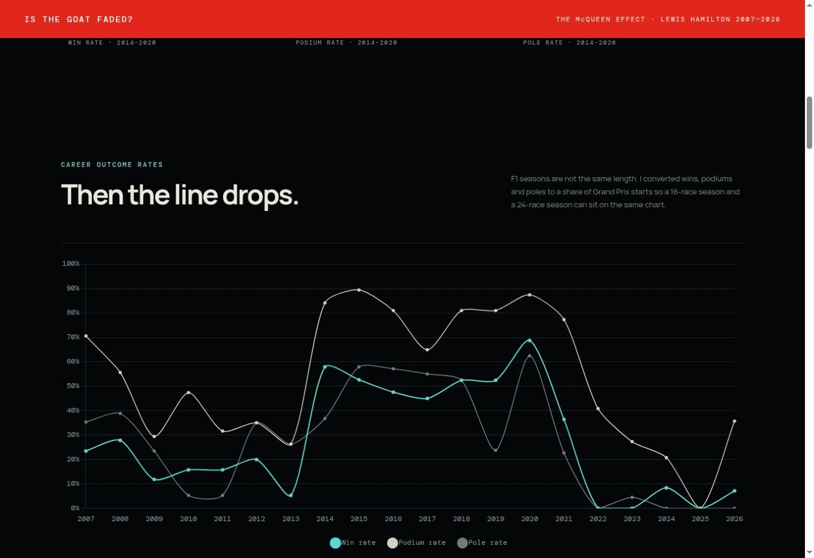
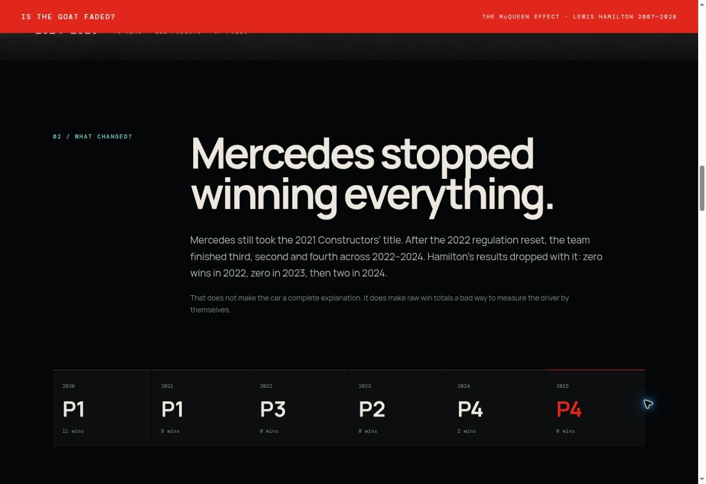

The peak is gone.
Later seasons are nowhere near the 2014–2020 rates. Treating that as “nothing changed” would be wrong.
Data analysis · Visualization · Interactive storytelling
A closer look at Lewis Hamilton’s career—and the extraordinary baseline behind the decline narrative.

I built the analysis around three lenses: absolute outcomes, the competitiveness of the constructor, and performance against the teammate in the same car. No single lens gets to answer the question by itself.

Season lengths changed across Hamilton’s career. Dividing wins, podiums and poles by Grand Prix starts keeps a 16-race season and a 24-race season on the same scale. The 2014–2020 run is the peak baseline because Mercedes won every Constructors’ Championship in that span.

Hamilton’s win rate falls sharply after the title-winning Mercedes era, but Mercedes also moves from first in the Constructors’ standings to third and fourth before the Ferrari switch. That does not erase driver decline; it stops raw win totals from being treated as a driver-only measure.
02 / Same-car comparison
Hamilton first; race head-to-heads follow the convention documented in the project.
Later seasons are nowhere near the 2014–2020 rates. Treating that as “nothing changed” would be wrong.
The post-2021 Mercedes was not the title-dominant machine that created the peak baseline.
Qualifying in particular becomes a serious negative signal, followed by a difficult first Ferrari season.
Hamilton is 7–7 in qualifying, 8–6 in races and ahead 191–167 on points versus Leclerc in the project’s current snapshot.
The finished experience starts with Hamilton as a person, not a line chart; establishes the 2014–2020 baseline; then moves through constructors and teammates before reaching the conclusion. The charts stay explorable, while photography and full-width section changes keep the analysis from turning into a report with graphs pasted between paragraphs.
“Hamilton is no longer the driver who turned half a season into wins. But judging every later year against that version of him makes ‘decline’ look cleaner than it is. The data shows a driver past his peak, cars that also moved backwards, one ugly adaptation year, and a 2026 season that refuses to fit the neat ending.”
My read from the final story
The repository includes the season data, Python calculations, source notes and head-to-head conventions. 2026 is explicitly year-to-date, so the page treats it as a snapshot rather than a finished season.

Product design · UX research · Interactive prototype
Making an F1 race easier to read, from annotated interfaces to a novice-friendly replay.
Explore case study →